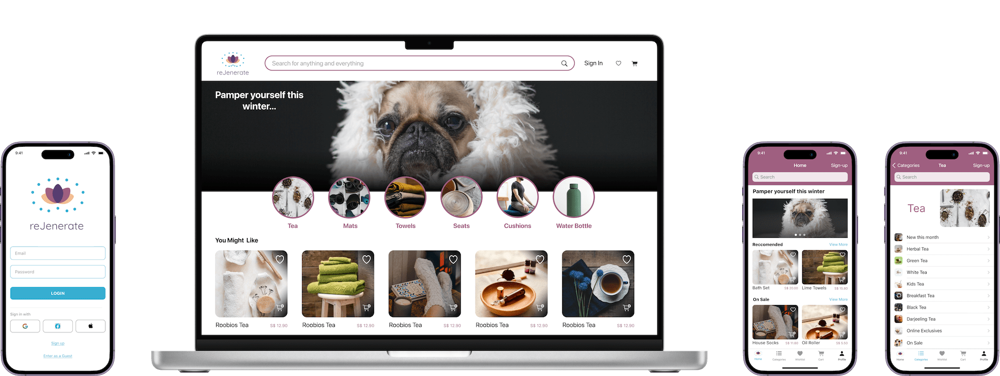
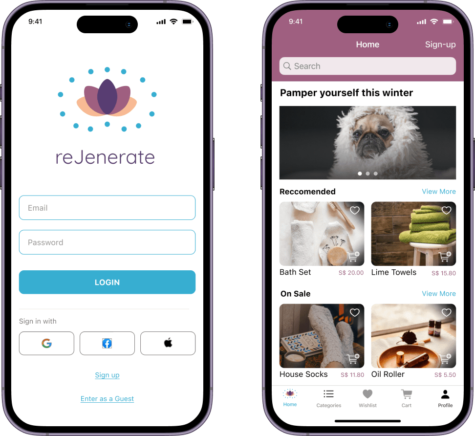

rejenerate - iOS User Interface Design
A Focus on Wellness
Wellness has been a major theme and even more so since the pandemic. With shops now being open again, people should still be able to obtain wellness products from the comfort of their own home. This is the purpose of the reJenerate shopping app.
What problem are we trying to solve?
The overall mission is to help users purchase or return wellness products without having to leave their house. How can we help users the right materials for their wellness needs from the comfort of their own home?
A Brand to Support Wellness for Everybody
Lotus Flower
The lotus flower has different meanings across cultures and is known as a symbol of purity, strength, resilience and rebirth.
Spiritual Energy Field
The blue dots represent a spiritual energy field emerging from the flower and the intention of the products to support the user in their 'regeneration' journey from within.
Who is this for?
This app was designed for for those who need to recharge, which is pretty much like everybody. They are motivated by seeing how wellness has positively impacted others and their goal is to feel energized, at peace and at their best; both with themselves and with others. The primary challenge for them is that finding wellness items involves going to crowded shopping centers and navigating through isles. This form of shopping does not give them the time and space to really explore and reflect on what they want to purchase.
Empathizing with users
Sometimes (but not always), new users who are seeking wellness products may already be experiencing some challenges or just have need for more peace in their lives. This is likely to mean that they would also rather not spend their time going to a post-office to return items. Customer service will be just as important as the products themselves.
Different Ways to Communicate the Brand
The reJenerate mark will be used throughout the website, on print and on various types of eco-friendly bags and boxes.
Brand Colors
Combining warm and cool
The brand features warm colors with one cool color, blue, as an accent. The warm colors are inviting and gently stand out. The blue gives a sense of peace and serenity.
Primary and accent colors
The primary color is intended to be beautiful, elegant and mystical.
The accent color is used to bring attention to specific details, which is why it is cool and contrasts strongly with the primary color. Combining this with the warm colors should give positive emotions to the user
Secondary colors
The secondary colors are warm, welcoming and diverse enough to be used in illustrations. The third color, salmon is actually not used in the logo but will support illustrations used as the brand grows.

Mindful
"The service is amazing"
The core mission is to provide users with items that will assist them in their wellness and mindfullness journey. The benefits should be felt from the moment they visit the website, through the entire purchasing process, the products themselves and the return or exchange process.
Inclusive
"I love how they explain so clearly the benefits of this type of cushion"
The brand should appeal to all genders and ages. This means not avoiding overcomplicated mindful vocabulary or terms that the everyday person may have difficulty grasping. Wellness should be accessible to everybody who access the shop.
Practical
I drink this tea literally every single morning
The store has curated a collection of very practical and high quality wellness products. The mission is not to make money from temporary souvenir-like items but rather to provide people with things they can integrate into their daily life.
Typography
Single font brand
Users may want to read detailed information about how to best use the products. Quicksand is a readable, modern and therefore very calming typeface to read.

I normally like to mix a serif with a san-serif but, I decided to stick with one font, while the brand is young.
Wellness isn't about fancy yoga poses
And it isn't about fancy club memberships. It is about the preventative or restorative things we can do throughout the day to make our lives better.
Practical products
A wellness product can be as simple as a forgiving cup of tea. Tea is an everyday item that users would likely want to try varieties of and order regularly without having to always run to the store.

User Stories and User Fow
Purchasing products is only a small part of the experience. The brand is keen to help users grow and continue on their wellness journey while they:
- Explore products
- Search and find what they need
- Learn and share
- Get recommendations
Low-Fidelity Design
A clean design for a clear mind
If there is one thing this user interface will not have, it is the bells and whistles of some of our popular shopping apps (though I understand bells and whistles have their place for other purposes). The app has a very simple navigation and the only flags they will get will be for sale items, or items recommended based on their past purchases.
The app came out just as I had envisioned at the beginning of the design process. It looks like an online wellness store and feels like a clean shopping experience.
Medium-Fidelity Prototype
Retrospective
What was the overall experience like?
This app was an immense pleasure for me to design beause it touched on a topic that I am very supportive and excited about.
What I learned
While this design was UI focused, it made clear to me the importance of doing a card sort, in order to determine how to best categorize items for users.
What I would do differently?
I think the Logo could be enhanced a little bit more to make it even more unique. This can be done with the arrangement of the blue dots.